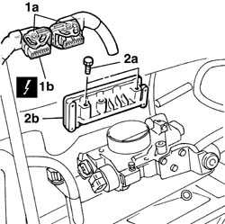
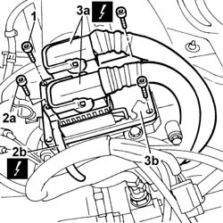
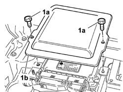
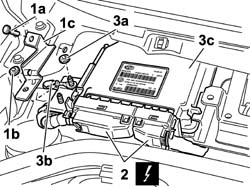
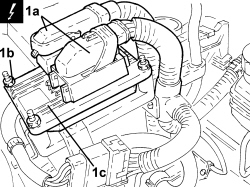

1056B82 injection/ignition system e.c.u. (one) - r + r
- Path
- Procedures > 10 ENGINE > 1056 PETROL INJECTION SYSTEM > 1056B MULTI-POINT INJECTION SYSTEM (MPI) > 1056B82 injection/ignition system e.c.u. (one) - r + r
- Kind
- repair procedure (removal / refitting; the operation number is the code)
- Applies to
- engines: 1.2 8v, 1.4 8v, 1.6 16v; all production periods
- Interactive page
- https://sloeber94.github.io/elrnDB-fDbl/en/#/2584248
Applies to: engines: 1.2 8v; all production periods
 Removing
Removing
 Refitting
RefittingDisconnect the negative battery terminal.
Op. 1048A10 AIR FILTER ASSEMBLY - R.R.
1. Undo retainers (1a) and disconnect the electrical connectors of injection control unit (1b).
Description | Connector | |
|---|---|---|
1b | Engine management control unit |
2. Undo the fixing bolts (2a) and remove the injection control unit (2b).

Applies to: engines: 1.2 8v; all production periods
Refitting
RemovingFit the injection control unit and tighten the fixing bolts.
Connect the electrical connectors.
Description | Connector | |
|---|---|---|
- | Engine management control unit |
Connect the negative battery terminal.
Applies to: engines: 1.6 16v; all production periods
Removing
RefittingDisconnect the negative battery lead.
Description | Connector | |
|---|---|---|
- | Battery |
Op. 1048A32 HOSE FROM AIR FILTER TO INTAKE MANIFOLD - R.R.
1. Undo the bolts fixing the injection control unit to the mount.
2. Undo the bolt (2a) and disconnect the earth lead (2b).
Description | Connector | |
|---|---|---|
2b | Injection control unit earth |
3. Disconnect electrical connections (3a), then remove control unit (3b) from the engine compartment.
Description | Connector | |
|---|---|---|
3a | Engine management control unit |

Applies to: engines: 1.6 16v; all production periods
Refitting
RemovingPosition the control unit on the mount and connect the injection control unit electrical connections.
Description | Connector | |
|---|---|---|
- | Engine management control unit |
Position the earth lead and tighten the bolt.
Description | Connector | |
|---|---|---|
- | Injection control unit earth |
Tighten the bolts fixing the injection control unit to the mount.
Op. 1048A32 HOSE FROM AIR FILTER TO INTAKE MANIFOLD - R.R.
Connect the negative battery lead.
Description | Connector | |
|---|---|---|
- | Battery |
Applies to: engines: 1.6 16v; all production periods; only with equipment: BIPOWER
Removing
RefittingDisconnect the negative battery terminal.
Op. 5050B34 WINDSCREEN WIPER ARM/S COMPLETE WITH BLADE - R+R
Op. 7055A18 L/H OR R/H SIDE RUBBING STRIP (ONE) FOR FRONT DOOR - R+R
1. Undo the fixing bolts (1a) and remove the protective cover (1b) for the injection/ignition system control unit.

Applies to: engines: 1.6 16v; all production periods; only with equipment: BIPOWER
1. Undo the bolt (1a) and the nut (1b) and remove the bracket (1c).
2. Disconnect the electrical connections from the injection/ignition system control unit.
Description | Connector | |
|---|---|---|
2 | Engine management control unit |
Description | Connector | |
|---|---|---|
2 | Engine management control unit |
3. Undo nut (3a), release earth lead (3b), then remove the injection/ignition control unit (3c).
Description | Connector | |
|---|---|---|
3b | Injection control unit earth |

Applies to: engines: 1.6 16v; all production periods; only with equipment: BIPOWER
Refitting
RemovingPosition the injection/ignition system control unit.
Position the earth lead and tighten the nut securing the earth lead/injection control unit.
Description | Connector | |
|---|---|---|
- | Injection control unit earth |
Connect the electrical connections to the injection/ignition control unit.
Description | Connector | |
|---|---|---|
- | Engine management control unit |
Description | Connector | |
|---|---|---|
- | Engine management control unit |
Fit the protective cover for the injection/ignition system control unit and tighten the fixing bolts.
Op. 7055A18 L/H OR R/H SIDE RUBBING STRIP (ONE) FOR FRONT DOOR - R+R
Op. 5050B34 WINDSCREEN WIPER ARM/S COMPLETE WITH BLADE - R+R
Connect the negative battery terminal.
Applies to: engines: 1.4 8v; all production periods
Removing
RefittingIf the injection/ignition system control unit is replaced, run the following self-learning procedure.
- Disconnect the negative battery terminal.
1. Disconnect electrical connections (1a), unscrew nuts (1b) and remove control unit (1c).
Description | Connector | |
|---|---|---|
1a | Engine management control unit |

Applies to: engines: 1.4 8v; all production periods
Refitting
RemovingComponent | Fastening | dia | Value (daNm) | Validity |
|---|---|---|---|---|
Injection/ignition system control unit | Nut | M6 | 0.7 ÷ 0.9 | 1.2 8v 1.4 8v |
- Connect the electrical connections for the control unit.
- Connect the negative battery terminal.
Topics linked from this page (9)
- 1048A10 air cleaner filtering element - replace
- 1048A32 sleeve from air cleaner to intake manifold - r + r
- 5050B34 windscreen wiper arm/s complete with blade - r+r
- 7055A18 Windscreen base TRIM - R.R.
- A001 BATTERY
- C60 EARTH ON ENGINE ( ENGINE )
- M010 ENGINE MANAGEMENT ECU
- M10A ENGINE MANAGEMENT ECU ( ENGINE )
- M10B ENGINE MANAGEMENT ECU ( ENGINE )
Topics that link to this page (45)
- B10 ENGINE DOES NOT START / UNDER NO CIRCUMSTANCES
- B13 ENGINE STARTS WITH DIFFICULTY'
- B20 ENGINE STARTS, AND CUTS OUT STRAIGHT AWAY
- D01 ENGINE NOT RUNNING SMOOTHLY / (HESISTANT)
- D02 ENGINE NOT RUNNING SMOOTHLY / (LOSING POWER)
- D03 ENGINE NOT RUNNING SMOOTHLY / (IRREGULAR OPERATION)
- D05 ENGINE DOES NOT PRODUCE BEST PERFORMANCE
- D10 ENGINE IDLE IRREGULAR
- D21 ENGINE CUTS OUT WHILST DRIVING
- D36 ENGINE COOLANT OVERHEATING SIGNALLED BY THE INSTRUMENT / WITH VISIBLE VAPOUR VENTING
- K25 ENGINE COOLANT TEMPERATURE GAUGE NOT WORKING
- K26 ENGINE COOLANT OVERHEATING WARNING LIGHT NOT WORKING
- K28 ENGINE COOLANT TEMPERATURE SIGNALLED BY INSTRUMENT TOO LOW
- K30 MINIMUM ENGINE OIL PRESSURE WARNING LIGHT NOT WORKING
- K50 I.E. FAILURE WARNING LIGHT ON
- K51 I.E. WARNING AND CODE WARNING LIGHT BOTH ON / ENGINE DOES NOT START
- K52 CODE FAILURE WARNING LIGHT ON
- Z54 MISFIRE ERROR IN ONE CYLINDER
- 0510A10 cylinder compression - check for loose spark plugs or injectors
- 1016A20 single cam cover - r + r and replace gasket
- 1016B20 lh cylinder head extension - replace gasket
- 1016B24 rh cylinder head extension - replace gasket
- 1016C10 cylinder head - r + r and replace gasket
- 1020D12 front crank shaft oil seal cover - r + r and replace seals
- 1020D14 front crank shaft oil seal cover - r + r and replace seals for versions with oil pump on crank shaft, timing side
- 1020D18 front crank shaft cover oil seal - replace
- 1032B10 toothed timing belt - r + r for timing adjustment or replacement
- 1032B14 toothed timing belt - r + r for timing adjustment or replacement versions with air conditioner
- 1032B46 toothed drive pulley - r + r
- 1032B52 toothed driven pulley (one) - r + r
- 1032B60 bolt pulley - r r
- 1032B62 TIMING BELT TOOTHED PULLEY - R.R. FOR VERSIONS WITH AIR CONDITIONING
- 1032C18 mobile timing system tensioner - r + r for 24 valve engines
- 1032D34 timing system guard assemblies - r + r
- 1036B10 overhead camshaft - r r on vehicle
- 1036G10 camshaft controlling exhaust valves in top head - r + r with top head removed - includes replacement of top head
- 1036G20 camshaft controlling intake valves in top head - r + r with top head removed - includes replacement of top head if necessary
- 1036G48 rear seal of camshaft of one l/h or r/h top head - r + r and replace seal
- 1036C39 PHASE TRANSFORMER ON INLET CAMSHAFT IN CYLINDER HEAD - R.R.
- 1036H14 valve tappets - check clearance
- 1036H18 VALVE TAPPETS - Adjust. following clearance check
- 1058A90 cng injection wiring harness - arrange
- 1056B87 ignition/injection system control unit mount - r r
- 1056B90 system cable bundle - r + r
- 1088C10 water pump - r + r